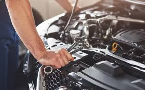
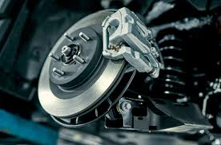
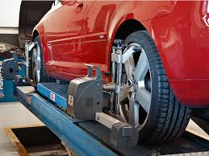
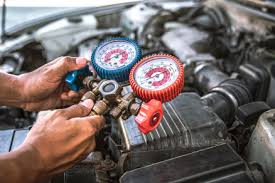

Nuestros Servicios Técnicos
Soluciones integrales para tu vehículo.

Mecánica General
Diagnóstico y reparación de motor, transmisión y más.

Frenos
Revisión, rectificación y cambio de pastillas y discos.

Cambio de Aceite y Filtros
Mantenimiento preventivo con los mejores lubricantes.

Electricidad Automotriz
Reparación de arranque, alternadores, luces y sistemas eléctricos.

Alineación y Balanceo
Asegura una conducción suave y evita el desgaste irregular de neumáticos.

Aire Acondicionado
Recarga de gas, detección de fugas y mantenimiento del sistema.